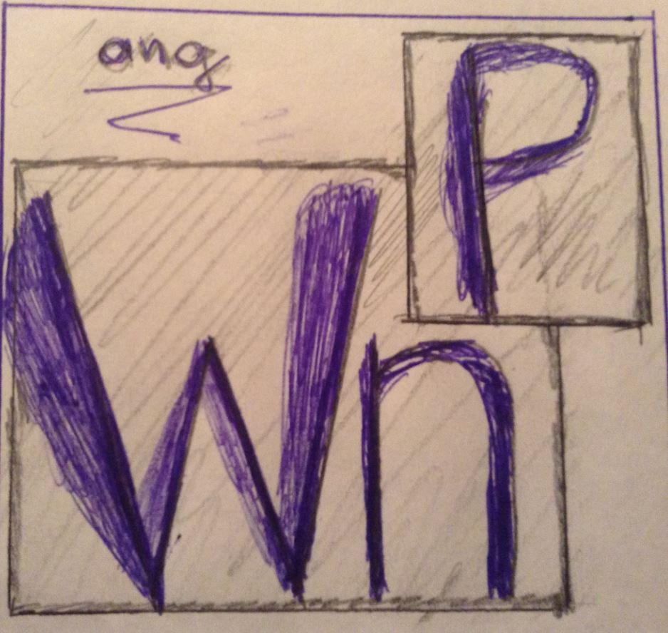

Download From GitHub.Download the Development Environment from GitHub. |
 |
This is a DEMO page to show the usage of the 'windowsPopup' AngularJS module. The 'windowsPopup' module helps you to integrate other popup windows to your main one page application.
For each browser window AngularJs has to be loaded separatelly. You need to load the same "WindowsPopup.js" file in both the Parent and the Child window. The 'windowsPopup' module helps you to communicate between the Child and Parent window, by using the wnp-popup directive. You use the left mouse click to open a new window. See below for an example usage.
Sometimes you may not want to open a new browser window; in that case you can open a Bootstrap Modal window. For Modal windows the Child(Modal) and Parent are running on the same AngularJS load environment, so no need to load the "WindowsPopup.js" file again for the Child(Modal) window. To open a Modal window, use the wnp-pop directive. (You can try it by doing a right mouse click. Do a right mouse click here ! ) You use the right mouse click to open a Modal window.
Data binding from Child to Parent is managed by the 'wnp-model' directive. This directive needs to be added as an attribute to an HTML tag where 'ng-module' is present, in both Parent and Child. The 'wnp-model' attribute is used to link Child to parent.
<input type="text" wnp-model="item_one" ng-model="parentData.dat" />In the Child window you have :
<input type="text" wnp-model="item_one" ng-model="childData.dat" />See the item_one value, that is used to link the Child model data to the parent model data. In the Parent window you have :
<wnp-popup url="views/popupWindow.html"
width="500"
height="500"
wnp-name="popupWindow"
second-click-colse="true"
>Open Popup 1 from here, using Angular</wnp-popup >
At the time of clicking on that link, the Parent model data that was marked for linking is copied to the child windows encapsulated in a shareble object. The sharable object contains callback functions that will be executed and updates the Parents model at the time when the user changes the child linked model data.
You can have only one popup window open with the same window name, see above (wnp-name="popupWindow"). If you want to open more windows, use a different wnp-name.
Click the following link to open the popup. Click again to close :
The following link opens a window, but needs to be closed by the Child :
The following link opens a window, but you need to press 'Apply Change' to update :
The link opens a window; there is 'Apply Change' button for each field :
The link opens a window; there is 'Apply Change' for a group of fields :
The link opens a window; that window can open an other one ... :
|
Your Window is opened.
|
||
| wnp-name : | Does not specify the title of the new window. | |
| url : | ||
| wnp-title : | This does specify the title of the new window. | |
| wnp-toggle-open-close : | Second click will close the window, if checked. | |
| wnp-auto-update : | The Parent automatically updated when Child changes, if checked. | |
| width : | Min. value is 100 | |
| height : | Min. value is 100 | |
| left : | The left position of the window. Negative values not allowed. | |
| top : | The top position of the window. Negative values not allowed. | |
|
Open your Window :
|
||
<wnp-popup url="{{wnpUrl}}"
wnp-name="{{wnpName}}"
wnp-title="{{wnpTitle}}"
width="{{wnpWidth}}"
height="{{wnpHeight}}"
wnp-auto-update="{{wnpAutoUpdate}}"
wnp-toggle-open-close="{{wnpToggleOpenClose}}"
left="{{wnpLeft}}"
top="{{wnpTop}}"
wnp-on-open="onOpen(wnpName)"
wnp-on-close="onClose(wnpName)"
> Click this. </wnp-popup>
|
||
If you opened any of the windows above, you'd seen that from the Child window you were able to change the Parent beckground color. You may ask, how the data was bind from the Child when there was no 'ng-model' tag in the Parent views. In those cases 'windowsPopup' module gives you a service to use. You need to inject the 'wnpToChild' service to you controller, see how was it was done for the above example :
.controller('ParentController', function($scope, wnpToChild) {
$scope.bgrColor = 'lightgray';
wnpToChild.addOneSharedModel($scope, 'item_three', 'bgrColor');
}
The above code is in your parent's controller function where the 'bgrColor' variable is created. See the item_three link name, that is used to bind the Child model back to the parent.
Lets see now where item_three is used in the Child.
<select wnp-model="item_three"
ng-model="brgColor"
ng-options="col for col in ['red', 'blue', 'green', 'lightgray']">
</select>
Note that the AngularJS ng-model name for the 'bgrColor' does not have to be the same for the parent and the child. The "item_three" model link has to be the same in both parent and child.
(BTW: in the above example the child has "brgColor", and the parent has "brgColor", not the same...)